Current Affairs — August 2026 · Class 9
Class 9 of the August 2026 monthly series (Ashish Gautam, Adda247) · 71 topics, grouped by exam category.
- Read once with Recall mode off. Hover over (or tap) any dotted name to see its static GK.
- Turn Recall mode on: the key facts are hidden. Say each one before you click to reveal it.
- Take the self-test at the end. Revise again tomorrow, in a week and in a month, using only the Rapid Revision box after that.
1Governance & National
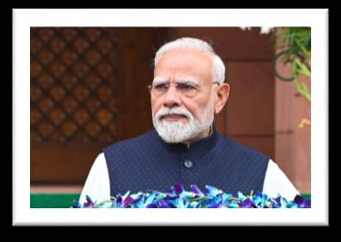
PM Modi Reviews Six Projects Worth over ₹30,000 Crore at 53rd PRAGATI Meeting
- PM Modi chaired the 53rd PRAGATI meeting at Seva Teerth.
- He reviewed 6 projects in railways, roads and power, spanning 9 states and over ₹30,000 crore.
- PRAGATI (Pro-Active Governance and Timely Implementation), launched 2015: an ICT-based platform for the PM to review big projects, schemes, Centre-State coordination and delays.
🎯 Likely QUnion Cabinet Approves High Court Bench for Ladakh
- The Cabinet approved a High Court Bench in Ladakh.
- It will be a bench of the High Court of Jammu & Kashmir and Ladakh; Ladakh is not getting a separate High Court.
- Ladakh LG: Vinai Kumar Saxena. UT since 31 October 2019; a UT without a legislature (unlike J&K).
🎯 Likely QGovernment Sets 9-SIM Limit for New Mobile Connections
- DoT told operators to refuse new connections to anyone who already has 9 SIMs in their name.
- Checks must be in place from 24 August 2026.
- Operators must use the Digital Intelligence Platform (DIP), which holds subscriber data uploaded by telecom companies.
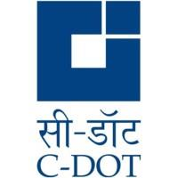
C-DOT Marks 43rd Foundation Day
- C-DOT (Centre for Development of Telematics) marked its 43rd Foundation Day in New Delhi.
- A government telecom R&D body under the Department of Telecommunications, Ministry of Communications; formed 25 August 1984; HQ Delhi.
- C-DOT developed Sanchar Saathi, which helps citizens with lost/stolen phones and telecom fraud.
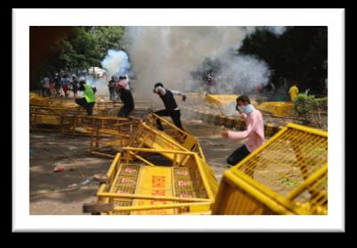
Supreme Court Forms High-Powered Enquiry Committee on NEET-UGNEET-UGconducted by the National Testing Agency (NTA), set up in 2017 Protest Allegations
- The Supreme Court set up a High-Powered Enquiry Committee (HPEC) on allegations from nationwide protests over the NEET-UG paper leak.
- It will examine allegations against both police/security personnel and protesters.
- Chairman: former SC Justice R. Subhash Reddy.
NSDCNSDCNational Skill Development CorporationUnder the Ministry of Skill Development & Entrepreneurship, Cultus Education & AWS Launch Nationwide Cloud and AI Skilling Initiative
- NSDC, guided by MSDE, launched a nationwide Cloud and AI skilling initiative with Cultus Education and AWS.
- 1.5 lakh learners will get foundational AI and cloud training.
2Infrastructure, Economy & Business
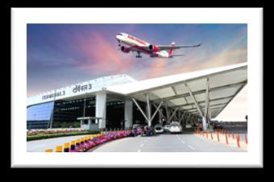
🎯 Likely QPPPACPPPACchaired by the Secretary, Department of Economic Affairs Gives In-Principle Approval for Third Round of Airport Privatisation
- The Public Private Partnership Appraisal Committee (PPPAC) gave in-principle approval to the third round of airport privatisation.
- 11 airports in 5 bundles: Amritsar + Kangra · Varanasi + Gaya + Kushinagar · Bhubaneswar + Hubballi · Raipur + Aurangabad · Tiruchirappalli + Tirupati.
- After final PPPAC approval it goes to the CCEA.
- In the previous round Adani Group won all six airports: Ahmedabad, Lucknow, Mangaluru, Jaipur, Guwahati, Thiruvananthapuram.
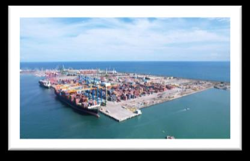
V.O. Chidambaranar Port Becomes India’s First Port with ISO 50001:2018 Certification
- V.O. Chidambaranar Port, Thoothukudi (Tamil Nadu), is India’s first port with ISO 50001:2018 certification.
- ISO 50001:2018 is the international standard for an Energy Management System (EnMS).
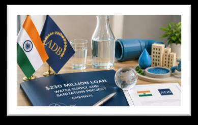
India and ADB ADBAsian Development BankEst. 19 December 1966HQ Manila, Philippines69 members (69th: Israel)Publishes the Asian Development Outlook Sign $230 Million Loan for Chennai Water and Sanitation
ADBAsian Development BankEst. 19 December 1966HQ Manila, Philippines69 members (69th: Israel)Publishes the Asian Development Outlook Sign $230 Million Loan for Chennai Water and Sanitation
- India and the ADB signed a $230 million loan to expand water supply and sanitation in Chennai.
- It complements AMRUT 2.0AMRUT 2.0Atal Mission for Rejuvenation and Urban Transformation, launched 1 October 2021 and the Urban Challenge Fund.
PhonePe Partners with MeitYMeitYMinistry of Electronics and Information TechnologyRuns Digital India to Integrate ‘PulsePro’ with PM GatiShaktiPM GatiShaktilaunched 13 October 2021BISAG-N is in Gandhinagar, under MeitY
- PhonePe signed an MoU with MeitY; its data-intelligence platform PulsePro will be integrated with the PM GatiShakti National Master Plan.
- The GatiShakti portal is managed with BISAG-N (Bhaskaracharya National Institute for Space Applications and Geo-informatics).
3Banking & Appointments
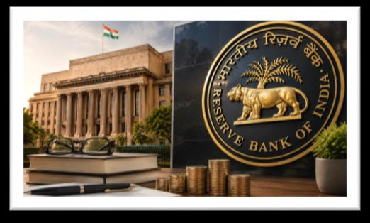
🏦 BankingGovernment Appoints 3 Part-Time Non-Official Directors on RBIRBIEst. 1 April 1935 under the RBI Act, 1934nationalised 1949HQ Mumbai Central Board
- Appointed for 4 years: Janmejaya Kumar Sinha, Syed Akbaruddin and Annie George Mathew.
- The Central Board is RBI’s apex governing body; the Governor is Chairperson; the Centre appoints members under the RBI Act.
- Maximum strength 21: Governor 1 · Deputy Governors 4 · Local Board directors 4 · Centre’s nominees from various fields 10 · Finance Ministry officials 2.
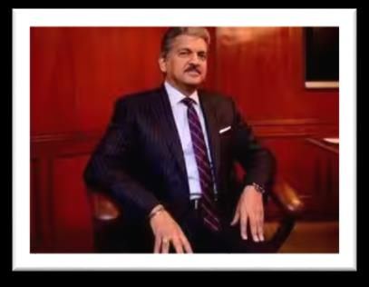
🏦 BankingAnand Mahindra Reappointed to RBI RBIReserve Bank of IndiaEst. 1 April 1935 (RBI Act 1934)Nationalised 1949HQ Mumbai Central Board
RBIReserve Bank of IndiaEst. 1 April 1935 (RBI Act 1934)Nationalised 1949HQ Mumbai Central Board
- Anand Mahindra (Chairman, Mahindra Group) was reappointed a part-time non-official director on the RBI Central Board.
- Former ISRO
 ISROIndian Space Research OrganisationEst. 1969HQ BengaluruUnder Department of Space Chairman Dr S. SomanathS. SomanathISRO Chairman 2022–2025; led Chandrayaan-3 was also appointed. Both for four years.
ISROIndian Space Research OrganisationEst. 1969HQ BengaluruUnder Department of Space Chairman Dr S. SomanathS. SomanathISRO Chairman 2022–2025; led Chandrayaan-3 was also appointed. Both for four years.
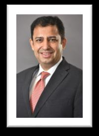
🏦 BankingSundeep Sikka Re-elected AMFIAMFIEst. 1995HQ Mumbai Chairman
- AMFI (Association of Mutual Funds in India) reappointed Sundeep Sikka (MD & CEO, Nippon Life India AMC) as Chairman.
- Vishal Kapoor (CEO, Bandhan AMC) reappointed Vice-Chairman.
- AMFI is the apex body of the mutual fund industry, representing all SEBI-registered AMCs.
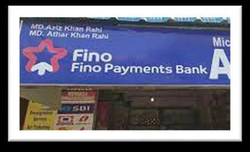
🏦 BankingFino Payments BankFino Payments BankHQ Navi Mumbai Extends Ketan Merchant’s Tenure as Interim CEO
- Fino Payments Bank extended Ketan Merchant’s term as interim CEO by three months from 27 August 2026.
- Former MD & CEO Rishi Gupta resigned on 21 May 2026.
4International
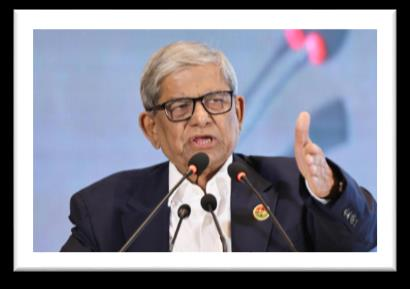
🎯 Likely QMirza Fakhrul Islam Alamgir Elected President of BangladeshBangladeshCapital DhakaCurrency TakaPresident elected by Parliament (Jatiya Sangsad)
- Mirza Fakhrul Islam Alamgir of the BNP was elected Bangladesh’s 23rd President.
- He won the country’s first contested presidential election in 35 years.
- Long-time BNP Secretary General and close ally of former PM Khaleda Zia; succeeds Mohammed Shahabuddin.
New ZealandNew ZealandCapital WellingtonCurrency NZ dollar Proposes Social Media Ban for Children Under 16
- New Zealand (PM Christopher Luxon) introduced the Online Safety (Minimum Age and Child Safety Risk Assessment) Bill to keep under-16s off high-risk social media.
- Australia was the world’s first country to enforce a nationwide under-16 social-media age limit.
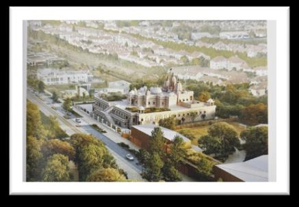
France to Get Its First Traditional Hindu Temple
- The BAPS Swaminarayan Hindu Mandir at Bussy-Saint-Georges (eastern Paris suburb) opens in September 2026, France’s first traditional Hindu temple.
- A 13-day ‘Festival of Culture’ marks the opening.
- BAPS = Bochasanwasi Akshar Purushottam Swaminarayan Sanstha.
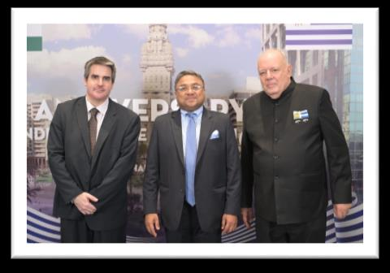
India Attends UruguayUruguayCapital MontevideoCurrency Uruguayan peso’s National Day Celebrations
- Sibi George, Secretary (West), MEA, represented India.
- Uruguay’s National Day is 25 August, marking its Declaration of Independence of 25 August 1825.
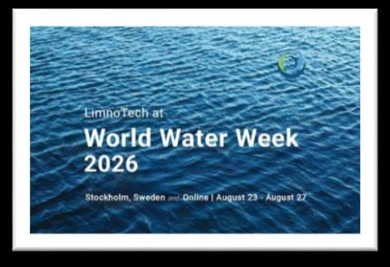
Ministry of Rural Development at World Water Week 2026, Stockholm
- India was represented by Rohini R. Bhajibhakre, Joint Secretary, Ministry of Rural Development.
- World Water Week is held every year by the Stockholm International Water Institute (SIWI), Sweden.
5Summits & Agreements
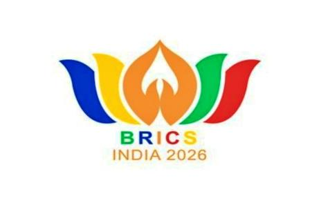
🎯 Likely QIndia to Host 18th BRICSBRICSFirst summit 2009, Yekaterinburg (Russia)South Africa joined 2010 Summit in New Delhi on 12–13 September
- India hosts the 18th BRICS Summit on 12–13 September 2026 at Bharat Mandapam, New Delhi.
- India took the chair on 1 January 2026; earlier chairships 2012, 2016, 2021 — this is the fourth.
- Theme: Building for Resilience, Innovation, Cooperation and Sustainability.
- BRICS completes 20 years in 2026; India is a founding member.
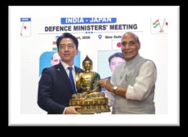
🎯 Likely QIndia–Japan Sign Maritime Security Pact
- India and Japan signed a Memorandum of Arrangement (MoA) on Maritime Security Cooperation in New Delhi.
- Signed by Rajnath Singh and Japan’s Defence Minister Shinjiro Koizumi.
- They will coordinate to protect Sea Lines of Communication (SLOCs), the main sea routes for trade, energy and shipping.
- Highlight: Veer GuardianVeer GuardianIndia–Japan air-force exercise; first held in 2023 in Japan 2026 — Japan Air Self-Defense Force fighters will exercise in India for the first time.
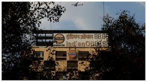
India, MauritiusMauritiusCapital Port LouisCurrency Mauritian rupee Sign Long-Term Fuel Supply Pact
- Signed during Petroleum Minister Hardeep Singh Puri’s visit to Mauritius.
- IOCL and Mauritius’s State Trading Corporation signed a 5-year Sales and Purchase Agreement: IOCL will meet Mauritius’s entire import need for petrol, diesel and aircraft fuel.
- Groundbreaking of Indian Oil (Mauritius)’s 27.5 TMT bunker fuel storage at Mer Rouge, Port Louis.
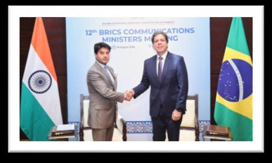
India–BrazilBrazilCapital BrasíliaCurrency Real Sign MoU on Telecom & ICT
- Signed on the sidelines of the BRICS ICT Track meeting in Pune, by Communications Minister Jyotiraditya Scindia.
6Defence
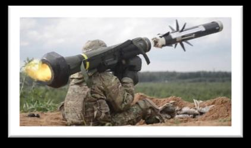
🎯 Likely QIndian Army to Procure Javelin Anti-Tank Guided Missiles from US
- The Army signed a US Foreign Military Sales (FMS) Letter of Offer and Acceptance for FGM-148 Javelin ATGMs, worth about $93 million.
- Javelin: a medium-range, man-portable anti-tank guided missile.
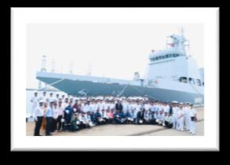
Indian Navy Receives First Indigenous Multi-Purpose Vessel ‘Samarthak’
- Samarthak, the Navy’s first indigenous Multi-Purpose Vessel, was delivered.
- Built by L&T at Kattupalli (Tamil Nadu).
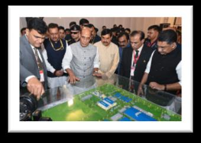
Rajnath Singh Lays Foundation of ₹472-Crore Tank Overhaul Facility in Jabalpur
- A ₹472-crore T-Series Tank Overhaul Facility at the Vehicle Factory, Jabalpur (MP), for T-72 and T-90 tanks.
- Vehicle Factory Jabalpur is a unit of Armoured Vehicles Nigam Ltd (AVNLAVNLone of the 7 defence PSUs carved out of the Ordnance Factory Board in October 2021HQ Avadi, Chennai).
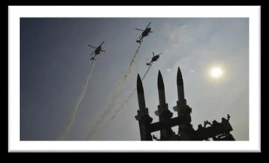
🎯 Likely QHALHALEst. 1940HQ Bengaluru and Safran Sign Deal for New-Generation Helicopter Engine ‘Aravalli’
- HAL and Safran Helicopter Engines (France) will jointly design, make and support the ‘Aravalli’ engine.
- Power: 3,500–4,000 shp.
- Developed by SAFHAL Helicopter Engines, a 50:50 JV; manufactured at Tumakuru, Karnataka.
🎯 Likely QIndia Produces First Fully Indigenised AK-203 ‘Sher’ Rifle
- Indo-Russian Rifles Pvt Ltd (IRRPL) made and test-fired the first AK-203 ‘Sher’ built entirely from Indian components, at Korwa, Amethi (UP).
- Contract: about ₹5,200 crore for 6,01,427 rifles; target now December 2030 (originally October 2032).
- IRRPL: India–Russia JV, founded 2019, HQ Korwa, Amethi.
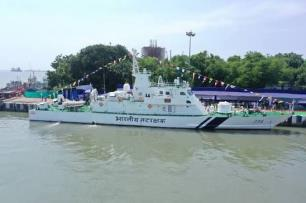
Goa Shipyard Hands Over ‘ICGS Ajit’ Fast Patrol Vessel to Coast Guard
- Goa Shipyard Ltd handed over ICGS Ajit (Yard 1277), a Fast Patrol Vessel, to the Indian Coast GuardIndian Coast Guardset up 1 February 1977 (Coast Guard Day)under the Ministry of Defence.
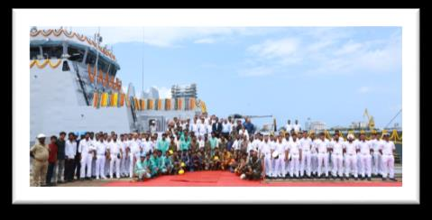
Indian Navy Receives ‘Mangrol’, 3rd ASW Shallow Water Craft
- Mangrol is the 3rd Anti-Submarine Warfare Shallow Water Craft built by Cochin Shipyard, delivered at Kochi.
- ASW = detect, track and counter submarines; shallow water craft = built for coastal waters.
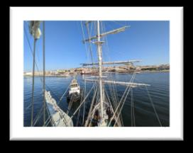
INS Sudarshini Reaches Lisbon under ‘Lokayan 26’
- Sail training ship INS Sudarshini reached Lisbon, Portugal, on its Lokayan 26 transoceanic expedition, entering via the Tagus River.
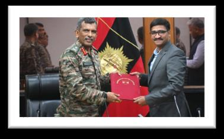
T-Hub Partners with Indian Army’s Central Command to Support Defence Start-ups
- Hyderabad’s T-Hub partnered with the Army’s Central Command: the Army gives real problem statements; T-Hub picks start-ups to solve them.
- T-Hub is one of 28 organisations implementing iDEXiDEXlaunched April 2018 by the Ministry of Defence (Innovations for Defence Excellence), the MoD’s innovation initiative.
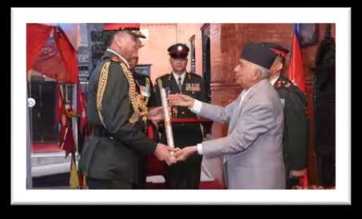
🎯 Likely QGeneral Dhiraj Seth Conferred Honorary General Rank of Nepali Army
- Army Chief General Dhiraj Seth received the Honorary Rank of General of the Nepali Army from Nepal’s President Ramchandra Paudel at Sheetal Niwas, Kathmandu.
- He is the 31st Chief of the Army Staff; took charge 30 June 2026, succeeding General Upendra Dwivedi.
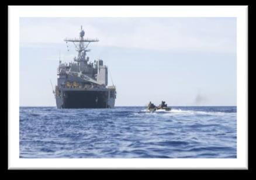
India–VietnamVietnamCapital HanoiCurrency Dong Coast Guards Hold ‘SAHYOG-HOPTAC’ 2026
- The 2nd edition of SAHYOG-HOPTAC, between the Indian and Vietnam Coast Guards, off Chennai.
- Vietnamese ship CSB 8002 came to Chennai; the 7th ICG–VCG High-Level Meeting was also held there.
7Science, Technology & Environment
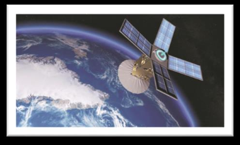
🎯 Likely QIN-SPACeIN-SPACeIndian National Space Promotion and Authorization CentreEst. 2020HQ AhmedabadAuthorises private space activity Approves India’s First Fully Commercial Earth Observation Constellation
- IN-SPACe signed a PPP agreement for India’s first indigenous, fully commercial Earth Observation satellite constellation.
- Built by Allied Orbits Pvt Ltd, a consortium led by PixxelSpace India with Dhruva Space, PierSight Space and SatSure Analytics.
- It will design, build, own and operate 12 EO satellites (agriculture, disasters, climate, urban planning, resources).
PM Modi Inaugurates ‘PARAM Pragya’ Supercomputing Facility
- PM Modi remotely inaugurated PARAM Pragya, an AI-powered HPC facility at IIT Delhi’s Sonipat campus (Haryana).
- He was Chief Guest at IIT Delhi’s 57th Convocation.
- Supercomputer speed is measured in FLOPS (floating-point operations per second).
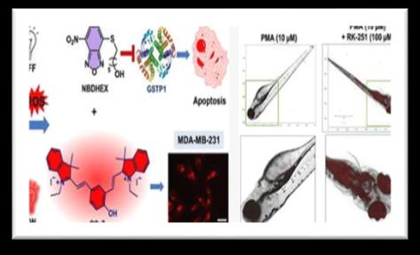
Indian Scientists Develop ‘Smart’ Cancer Drug RK-251
- RK-251 is a smart cancer-drug candidate that becomes active mainly inside cancer cells, sparing healthy ones.
- Led by Dr Asis Bala (IASSTIASSTInstitute of Advanced Study in Science and Technology, Guwahati) and Dr K. P. Bhabak (IIT Guwahati). IASST is an autonomous institute under DST.
PSA Ajay Kumar Sood Launches ‘RSVC AMRIT’ Platform for Rural Innovation
- Principal Scientific Adviser Prof Ajay Kumar Sood launched RSVC AMRIT on the 80th Independence Day.
- Developed by NABARD
 NABARDNational Bank for Agriculture and Rural DevelopmentEst. 12 July 1982HQ MumbaiMinistry of Finance with the Office of the PSA; the digital backbone of the RuTAGeRuTAGeRural Technology Action Group Smart Village Centre (RSVC) network.
NABARDNational Bank for Agriculture and Rural DevelopmentEst. 12 July 1982HQ MumbaiMinistry of Finance with the Office of the PSA; the digital backbone of the RuTAGeRuTAGeRural Technology Action Group Smart Village Centre (RSVC) network. - Goals: rural innovation, technology transfer, affordable technology, links between innovators and villages, last-mile delivery.
- Builds on an earlier MoU among NABARD, OPSA and NABFOUNDATION.
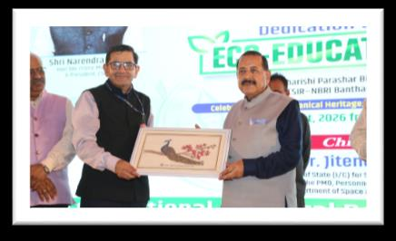
Dr Jitendra Singh Inaugurates ‘Prakriti Gyan Dham’ Eco-Educational Hub in Lucknow
- Union Minister Dr Jitendra Singh dedicated ‘Prakriti Gyan Dham’, a first-of-its-kind eco-educational hub by CSIR-NBRICSIR-NBRINational Botanical Research Institute, Lucknow.
- At the Maharishi Parashar Bioresource Centre, Banthra, Lucknow.
- It combines research, environmental education, biodiversity conservation and botanical heritage.
IICT and Netflix Announce Scholarships for 100 AVGC Students
- IICT and Netflix will fund 100 students, up to 80% of fees, across 6 programmes in AVGC (Animation, VFX, Gaming, Comics).
- Courses include diplomas in Interactive Comics & Sequential Arts and VFX Mastery, and certificates in virtual art, media-tech workflow, character animation and e-sports management.
- IICT: India’s national centre of excellence for AVGC-XR; set up by the Ministry of I&B with Maharashtra, FICCI and CII; runs from the NFDC complex, Pedder Road; permanent campus at Film City, Goregaon, Mumbai.
8Sports
🎯 Likely QR. Praggnanandhaa Becomes First Indian to Win Grand Chess Tour
- R. Praggnanandhaa became the first Indian to win the Grand Chess Tour.
- He beat defending champion Fabiano Caruana (USA) 15–13 in the final at St. Louis.
- Prize: $200,000.
🎯 Likely QEast Bengal Lift Durand CupDurand Cupfirst held 1888 in Shimlanamed after Sir Mortimer Durand for Record-Equalling 17th Time
- East Bengal won the 135th IndianOil Durand Cup, beating Mohun Bagan Super Giant 4–1 at Salt Lake Stadium, Kolkata.
- Its 17th title, equalling Mohun Bagan’s record of 17.
- Edmund Lalrindika scored a first-half hat-trick and won the Golden Ball.
- The Durand Cup is Asia’s oldest and the world’s third-oldest football tournament, organised by the Indian Army for the three Services.
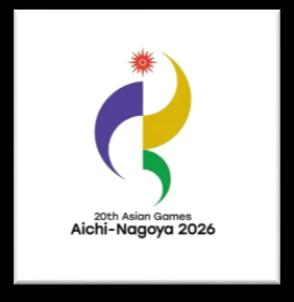
🎯 Likely QIndia Approves 492-Athlete Contingent for Asian GamesAsian Gamesfirst held in 1951 in New Delhievery 4 years 2026
- 492 athletes (265 men, 227 women) for the 20th Asian Games, Aichi-Nagoya, Japan.
- Japan hosts for the third time (Tokyo 1958, Hiroshima 1994). Motto: “Imagine One Asia”. Mascot: Honohon.
- Next: 2030 Doha (Qatar), 2034 Riyadh (Saudi Arabia).
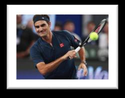
Federer Inducted into International Tennis Hall of Fame
- Roger Federer entered the International Tennis Hall of Fame (Class of 2026, Player category) at Newport, Rhode Island.
- He received his Hall of Fame ring at Arthur Ashe Stadium during the US Open.
- 20 Grand Slam titles; retired in 2022.
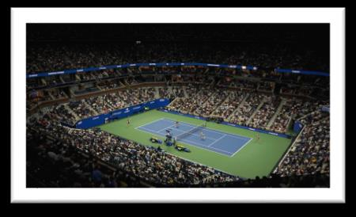
US Open 2026 Sets Record $108 Million Player Compensation
- The USTA announced a record $108 million, 20% more than 2025’s $90 million.
- Singles champion’s prize $5.5 million: the highest ever at any tennis event.
- The US Open will be the first Grand Slam with a Player Support Program.
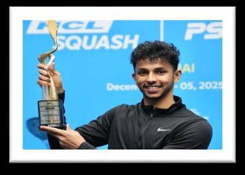
Velavan Senthilkumar Wins Budapest Squash Open
- Velavan Senthilkumar beat Hungary’s Balazs Farkas in the final of the $43,500 PSA Copper event.
India Open 2028 to Be Held in Guwahati
- The India Open Super 750 badminton tournament ($950,000) moves from New Delhi to Guwahati in 2028.
- It is a marquee BWFBWFBadminton World Federation, HQ Kuala Lumpur World Tour event.
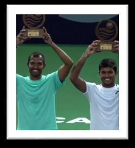
Balaji–Anirudh Pair Wins Cancún Country Open Doubles Title
- N. Sriram Balaji and Anirudh Chandrasekar won the men’s doubles at the Cancún Country Open (Mexico).
- They beat Miguel Ángel Reyes-Varela (Mexico) and Ivan Liutarevich (Belarus).
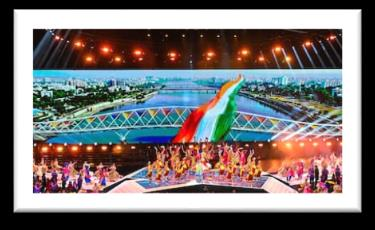
Ahmedabad to Host Commonwealth Cue Sports Championships 2026
- Ahmedabad hosts the 2nd Commonwealth Cue Sports Championships in October 2026, at the Veer Savarkar Sports Complex.
- The first edition was in Mauritius (2025). Run under BSFI and the World Confederation of Billiards Sports.
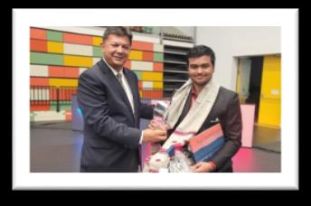
GM Pranesh M Wins Kanizsa Open in Hungary
- Pranesh M (from Karaikudi, Tamil Nadu) won the Group A title at the Kanizsa Open 2026, Nagykanizsa, Hungary.
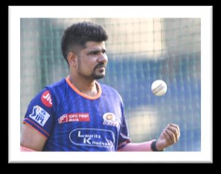
Karn Sharma Retires from All Formats
- Leg-spinner Karn Sharma (born Meerut, UP) retired from all competitive cricket. T20I debut: vs England, 2014.
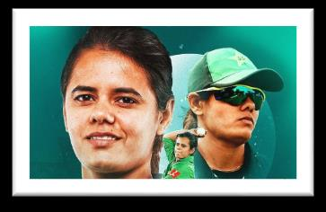
Pakistan Fast Bowler Aimen Anwar Retires
- Pakistan women’s pacer Aimen Anwar retired from international cricket.
9Important Days
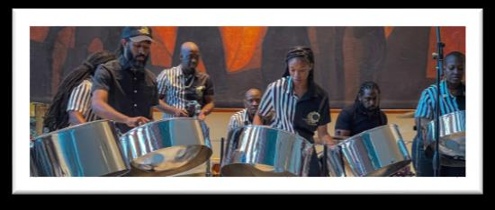
World Steelpan Day — 11 August
- Marks the steelpan, a musical instrument from Trinidad and Tobago.
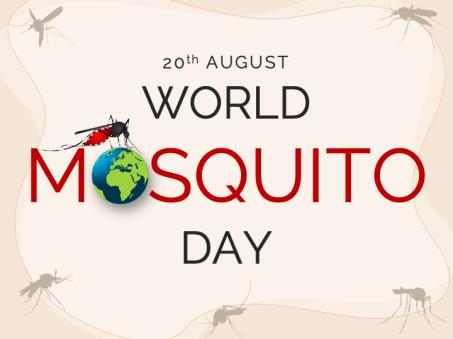
🎯 Likely QWorld Mosquito Day — 20 August
- Marks Sir Ronald RossRossdiscovery made at Secunderabad’s discovery on 20 August 1897 that female Anopheles mosquitoes transmit malaria.
- He made it while working in India; Nobel Prize in Physiology or Medicine, 1902.
National Senior Citizens Day — 21 August
- Observed on 21 August to honour older people. Theme: “Ageing with Dignity”.
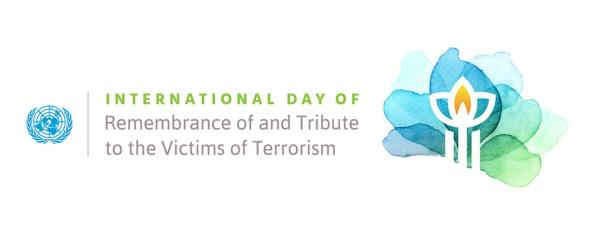
Remembrance of and Tribute to Victims of Terrorism — 21 August
- UN day on 21 August. 2026 theme: “Healing through Memory”.
Victims of Violence Based on Religion or Belief — 22 August
- UN day on 22 August, remembering victims of religious violence and promoting religious freedom.
Remembrance of the Slave Trade and its Abolition — 23 August
- Observed on 23 August, remembering victims of the transatlantic slave trade.
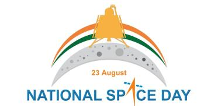
🎯 Likely QNational Space Day — 23 August
- Marks Chandrayaan-3Chandrayaan-3launched 14 July 2023 on LVM3 from Sriharikotalanding site named Shiv Shakti point’s Vikram lander soft-landing near the Moon’s south pole on 23 August 2023.
- India: 4th country to soft-land on the Moon, first near the south polar region.
- 2026 is the third National Space Day. Theme: “Towards Viksit Bharat: Innovating, Collaborating and Aspiring to Global Space Leadership”.
- Chandrayaan-1: 2008 · Chandrayaan-2: 2019 · Chandrayaan-3 landed: 2023.
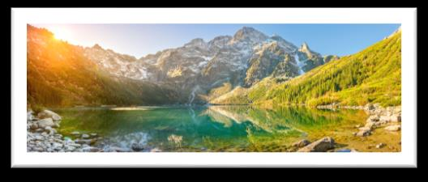
World Lake Day — 27 August
- Observed on 27 August, highlighting protection of lakes from pollution, overuse and climate change.
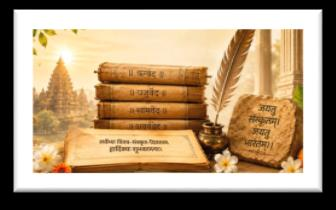
World Sanskrit Day — 28 August 2026
- Held on Shravana Purnima, so the date changes each year (28 August in 2026).
- India declared Shravana Purnima Sanskrit Day in 1969; Sanskrit Week since 2001.
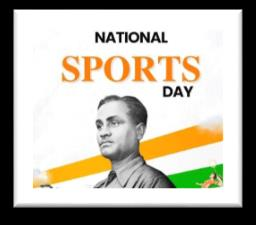
🎯 Likely QNational Sports Day — 29 August
- Rashtriya Khel Diwas, on the birth anniversary of hockey legend Major Dhyan ChandDhyan Chandborn 29 August 1905, Allahabad3 Olympic golds (1928, 1932, 1936).
- Campaign theme: “Tribute, Play, and Move”. First observed in 1995; nationally since 2012.
10Awards & Honours
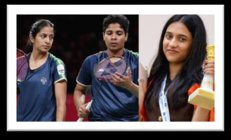
🎯 Likely QNational Sports Awards 2025 Announced
- Announced by the Ministry of Youth Affairs & Sports on the recommendation of a committee chaired by Justice (Retd.) Arun Kumar Mishra.
- Major Dhyan Chand Khel Ratna: India’s highest sports honour, for outstanding performance over 4 years; ₹25 lakh; instituted 1991–92; renamed from Rajiv Gandhi Khel Ratna in 2021. First winner Viswanathan Anand; youngest Abhinav Bindra (2001, aged 18).
- Dronacharya (coaches; since 1985; ₹15 lakh lifetime, ₹10 lakh regular): Parveer Singh (athletics), Chhote Lal Yadav (boxing), Neha Nandkumar Chavan (shooting); Lifetime — Dharmendra Singh Yadav (boxing), Virender Kumar (wrestling).
- Arjuna (since 1961; ₹15 lakh) — 17 awardees incl. Tejaswin Shankar, Muhammed Ajmal V, Priyanka Goswami (athletics); Treesa Jolly, Pullela Gayatri Gopichand (badminton); Narender (boxing); Vidit Gujrathi, Divya Deshmukh (chess); Dhanush Srikanth (deaf shooting); Lalremsiami, Rajkumar Pal (hockey); Surjeet, Pooja (kabaddi); Rudransh Khandelwal (para-shooting); Ekta Bhyan (para-athletics); Arvind Singh (rowing); Akhil Sheoran (shooting).
- Arjuna (Lifetime): I. Arumainayagam (football).
- Rashtriya Khel Protsahan Puruskar: Army Paralympic Node, Pune. The top university gets the Maulana Abul Kalam Azad (MAKA) Trophy.
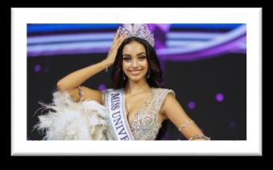
Kaziah Liz Mejo Crowned Miss Universe India 2026
- Kaziah Liz Mejo of Kerala won in Jaipur: the first woman from Kerala to win the title.
- 1st runner-up Vaishnavi Gannesh (TN); 2nd runner-up Anushri Satavlekar (Gujarat) became Miss International India 2026.
- She will compete at the 75th Miss Universe in Puerto Rico, November 2026.
- India’s Miss Universe winners: Sushmita Sen 1994, Lara Dutta 2000, Harnaaz Sandhu 2021.
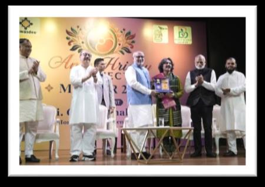
Vice President C.P. Radhakrishnan Inaugurates ‘MALHAR 2026’
- MALHAR 2026: a youth-centric, monsoon-themed festival of Indian classical music in New Delhi, organised by Antar Hriday Connect.
11Obituaries
🎯 Likely QNorwayNorwayCapital OsloCurrency Norwegian krone’s King Harald V Passes Away at 89
- King Harald V (1937–2026) reigned from 17 January 1991 until his death on 28 August 2026.
- He was Europe’s oldest living monarch.
Filmmaker Kuku Kohli Passes Away at 77
- Kuku Kohli (real name Sandesh Kohli) introduced Ajay Devgn with Phool Aur Kaante.
Sri Lankan Singer Nanda Malini Passes Away at 82
- Nanda Malini, iconic Sri Lankan singer, studied at the Bhatkhande College of Hindustani Music, Lucknow.
Veteran Actress Sowcar Janaki Passes Away at 94
- Sowcar Janaki acted in Tamil, Telugu and Kannada films; Padma Shri and Tamil Nadu’s Kalaimamani award.
Maj Gen Sunil Kumar Razdan, Army’s First Wheelchair-Borne General, Passes Away
- Maj Gen Sunil Kumar Razdan (Retd.), Kirti Chakra and VSM awardee, of 7 PARA (SF).
- He was the Indian Army’s first wheelchair-borne General.
12Books
Dr Arindam Chaudhuri Announces ‘Africa Before America’
- New book: ‘Africa Before America’ by Dr Arindam Chaudhuri.
- It follows ‘2047: A Roadmap to Beating USA & China’ (2022). Earlier: Planning India (1997), The Great Indian Dream.
13Self-test
Answer out loud first, then click to check. Re-test the ones you missed tomorrow.
53rd PRAGATI meeting — where, and how many projects reviewed?
Seva Teerth; 6 projects, 9 states, ₹30,000 crore+
Is Ladakh getting a separate High Court?
No — a bench of the High Court of J&K and Ladakh
SIM-card limit per person, and from when must checks apply?
9 SIMs; 24 August 2026 (via the Digital Intelligence Platform)
Third round of airport privatisation — how many airports and bundles?
11 airports in 5 bundles
Who won all six airports in the previous round?
Adani Group
India’s first port with ISO 50001:2018?
V.O. Chidambaranar Port, Thoothukudi
Maximum strength of the RBI Central Board?
21
Which former ISRO chief joined the RBI Central Board?
Dr S. Somanath
Who was re-elected AMFI Chairman?
Sundeep Sikka (Nippon Life India AMC)
Bangladesh’s 23rd President and his party?
Mirza Fakhrul Islam Alamgir; BNP
Where is France’s first traditional Hindu temple?
Bussy-Saint-Georges, near Paris (BAPS)
18th BRICS Summit — dates, venue and India’s chairship count?
12–13 Sept 2026; Bharat Mandapam; 4th (2012, 2016, 2021, 2026)
Which exercise brings Japanese fighter jets to India for the first time?
Veer Guardian 2026
IOCL–Mauritius deal length?
5 years (all petrol, diesel and aircraft-fuel imports)
Javelin deal — route and value?
US Foreign Military Sales; ≈ $93 million
Name and power of the HAL–Safran helicopter engine?
Aravalli; 3,500–4,000 shp
Where is the AK-203 ‘Sher’ made?
Korwa, Amethi (UP) — IRRPL
Mangrol is the which ASW-SWC, from which yard?
3rd; Cochin Shipyard
Which Nepal honour did Gen Dhiraj Seth receive, and from whom?
Honorary General of the Nepali Army; President Ramchandra Paudel
India’s first fully commercial EO constellation — consortium and number of satellites?
Allied Orbits (led by PixxelSpace); 12
Where is PARAM Pragya?
IIT Delhi’s Sonipat campus
Who beat Caruana to win the Grand Chess Tour?
R. Praggnanandhaa (15–13)
Durand Cup 2026 winner and title count?
East Bengal; 17th (equals Mohun Bagan)
India’s Asian Games 2026 contingent size and host?
492; Aichi-Nagoya, Japan
US Open 2026 total compensation and singles winner’s prize?
$108 million; $5.5 million
India Open 2028 moves to which city?
Guwahati
Why is World Mosquito Day on 20 August?
Ronald Ross showed female Anopheles transmit malaria (20 Aug 1897)
Which National Space Day is 2026?
The third
Who chaired the National Sports Awards 2025 selection committee?
Justice (Retd.) Arun Kumar Mishra
Khel Ratna cash prize and first recipient?
₹25 lakh; Viswanathan Anand
Rashtriya Khel Protsahan Puruskar 2025 went to?
Army Paralympic Node, Pune
Miss Universe India 2026?
Kaziah Liz Mejo (Kerala) — first from Kerala
Europe’s oldest monarch who died on 28 August 2026?
King Harald V of Norway
The Indian Army’s first wheelchair-borne General?
Maj Gen Sunil Kumar Razdan
⚡ Rapid Revision
- PRAGATI 53rd (Seva Teerth, 6 projects, ₹30,000 cr) · Ladakh gets a HC bench (not a HC) · 9-SIM cap from 24 Aug 2026 (DIP) · C-DOT 43rd Foundation Day (Sanchar Saathi) · SC panel on NEET-UG protests (R. Subhash Reddy).
- Airport privatisation round 3: 11 airports, 5 bundles (PPPAC → CCEA) · VOC Port first with ISO 50001 · ADB $230 mn for Chennai water · PhonePe PulsePro + PM GatiShakti (BISAG-N).
- RBI board: Janmejaya Sinha, Syed Akbaruddin, Annie George Mathew; Anand Mahindra reappointed; S. Somanath added (max 21) · AMFI: Sikka chair, Vishal Kapoor vice · Fino: Ketan Merchant interim CEO +3 months.
- Bangladesh President: Mirza Fakhrul Islam Alamgir (BNP, 23rd) · NZ under-16 social-media bill · France’s first Hindu temple (BAPS, Bussy-Saint-Georges) · Uruguay Day 25 Aug.
- BRICS 18th summit 12–13 Sept, Bharat Mandapam (4th chair) · India–Japan maritime MoA; Veer Guardian 2026 in India · IOCL–Mauritius 5-yr fuel deal · India–Brazil telecom MoU (Pune).
- Defence: Javelin via FMS ($93 mn) · Samarthak MPV (L&T) · ₹472 cr tank overhaul, Jabalpur (AVNL) · Aravalli engine (HAL–Safran, Tumakuru) · AK-203 ‘Sher’ fully Indian (Amethi) · ICGS Ajit · Mangrol (3rd ASW-SWC) · T-Hub–Central Command · Gen Dhiraj Seth honoured by Nepal · SAHYOG-HOPTAC (Vietnam).
- S&T: first commercial EO constellation (PixxelSpace-led, 12 sats) · PARAM Pragya (IIT Delhi Sonipat) · RK-251 cancer drug (IASST + IIT Guwahati) · RSVC AMRIT (NABARD + PSA) · Prakriti Gyan Dham (CSIR-NBRI) · IICT–Netflix AVGC scholarships.
- Sports: Pragg wins Grand Chess Tour · East Bengal 17th Durand Cup · 492 athletes to Aichi-Nagoya · Federer into Hall of Fame · US Open $108 mn · India Open to Guwahati (2028).
- Days: 11 Aug Steelpan · 20 Aug Mosquito · 21 Aug Senior Citizens, Victims of Terrorism · 22 Aug Religion-based violence · 23 Aug Slave Trade, National Space Day (3rd) · 27 Aug Lakes · 28 Aug Sanskrit · 29 Aug Sports Day.
- Awards: National Sports Awards 2025 (Justice A.K. Mishra panel; 17 Arjunas incl. Vidit, Divya Deshmukh) · Miss Universe India: Kaziah Liz Mejo · Obits: King Harald V, Kuku Kohli, Nanda Malini, Sowcar Janaki, Maj Gen Razdan.
End of August 2026 · Class 9